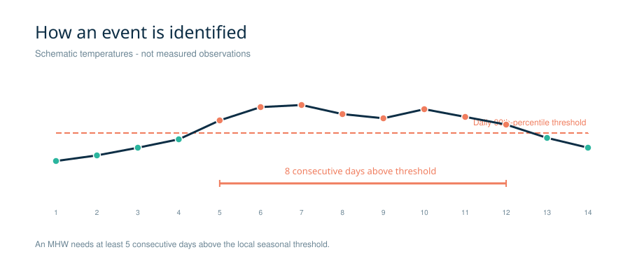
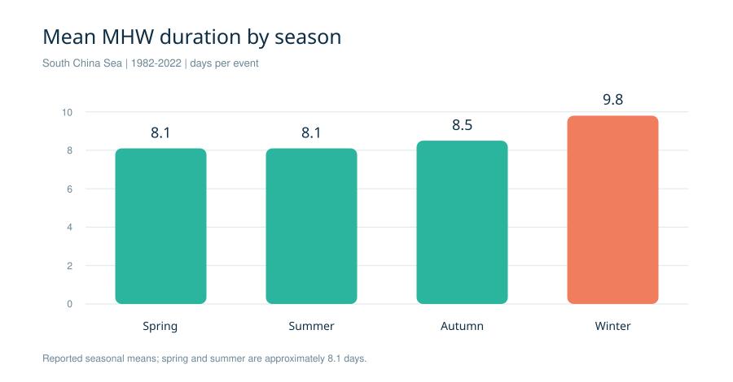
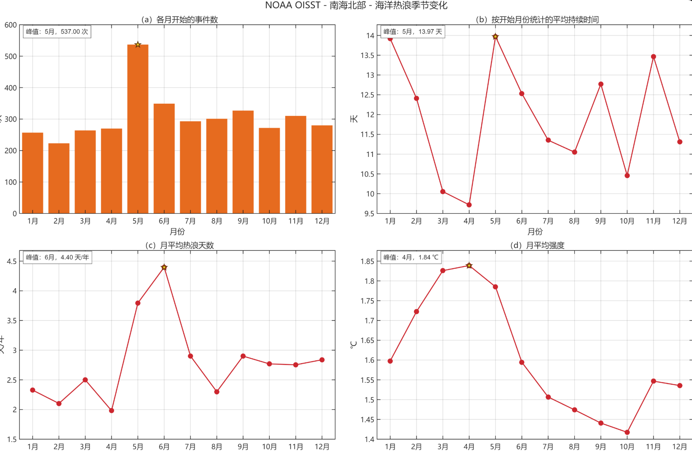

当海洋
遭遇热浪。When the Ocean Meets a Heatwave
从“怎样算一次事件”出发，读懂全南海海洋热浪的频次、持续时间、强度与空间差异。 / Start with event detection, then explore frequency, duration, intensity and spatial contrasts across the entire South China Sea.
文献数据导览 · 主要空间统计期 1982—2022 · NOAA OISST / Literature-based atlas · Main spatial period 1982–2022 · NOAA OISST
怎样识别一次海洋热浪？How Is a Marine Heatwave Detected?
判定依据是某个位置的海温相对于该位置、该季节的历史水平异常偏暖，而不是海温达到某个全球统一数值。 / Detection is based on unusually warm sea temperature relative to the historical conditions at that location and season, rather than a single global temperature threshold.

逐日比较 / Compare Each Day
用 NOAA OISST 的逐日海表温度，与每个格点按季节变化的历史第 90 百分位阈值比较。 / Compare daily NOAA OISST sea-surface temperature with the seasonally varying historical 90th-percentile threshold at each grid cell.
持续至少 5 天 / Last at Least Five Days
连续 5 天或更久高于阈值才算事件；间隔少于 3 天的两段事件合并。 / An event requires at least five consecutive days above the threshold; two events separated by fewer than three days are merged.
计算六项指标 / Calculate Six Metrics
再统计频次、持续时间、平均与最大强度、累积强度，以及总热浪天数。识别阈值与强度指标不能混为一谈。 / Then calculate frequency, duration, mean and maximum intensity, cumulative intensity and total heatwave days. Do not confuse the detection threshold with intensity.
识别口径与数据分辨率来自 / Detection rules and data resolution follow Meng 等（2024） / Meng et al. (2024)：1982—2022 年气候期，0.25° NOAA OISST；方法基于 Hobday 等（2016）。 / : 1982–2022 climatology, 0.25° NOAA OISST, based on Hobday et al. (2016).
热浪在南海哪里更突出？Where Are Heatwaves More Prominent?
下方数值是已发表研究对 1982—2022 年全南海逐格结果的归纳。切换指标，查看不同区域的突出特征。 / The values below summarize published grid-cell results for the whole South China Sea during 1982–2022. Switch metrics to compare highlighted regions.
点位仅帮助定位文献提到的区域；颜色与圆圈大小不代表海温或统计值。 / Markers locate regions discussed in the literature; colours and circle sizes do not encode temperature or statistics.查看原论文栅格图 ↗ / View the paper's grid-cell maps ↗
东北部与近岸格点较频繁；西南部平均不足 2 次/年。两个数字是不同位置的多年平均，不是全海域统一值。 / Events are more frequent in northeastern and nearshore cells; the southwest averages fewer than two events/year. These are multi-year means at different locations, not basin-wide values.
数据依据：Meng 等，2024 ↗ / Source: Meng et al., 2024 ↗哪个季节持续更久？Which Season Has Longer Events?
全南海的季节平均表明：冬季单次事件持续时间最长，但“时间长”和“事件多”是不同概念。 / Basin-wide seasonal means show the longest individual events in winter. Event length and event frequency are different measures.

高于春、夏季的约 8.1 天/次。 / Longer than the roughly 8.1 days/event in spring and summer.
论文报告的全海域季节平均；局地值可更高。 / Basin-wide seasonal mean reported in the paper; local values may be higher.
论文报告的季节平均，略高于其他季节的约 5.3 天。 / Reported seasonal mean, slightly above the roughly 5.3 days in other seasons.
以上均为 / All are Meng 等（2024） / Meng et al. (2024)的 1982—2022 年全南海汇总；单次持续时间、季节总天数及强度的分母不同，不应相加。 / basin-wide summaries for 1982–2022. Duration per event, seasonal total days and intensity have different denominators and should not be added.
夏季在怎样变化？How Have Summers Changed?
另一项研究只统计 1982—2020 年的夏季（6—8 月），报告了全海域平均的变化速率。与上面的全年季节统计分开阅读。 / A separate study reports basin-mean change rates for summers (June–August) in 1982–2020. Read these separately from the year-round seasonal statistics above.
±0.87；显著增加 / ±0.87; significant increase
±0.05；显著增加 / ±0.05; significant increase
±0.29；显著增加 / ±0.29; significant increase
在该研究时段与方法下 / Under that study's period and method
夏季热浪天数增加，可以由事件变多和单次持续变长共同推动；不能仅凭这三个趋势推断每次事件都更强。论文还指出年际差异明显，1998、2010、2016 和 2020 年为较突出的夏季年份。 / More summer heatwave days can result from both more events and longer events. These trends do not imply that every event became stronger. The paper also reports substantial year-to-year variability, with notable summers in 1998, 2010, 2016 and 2020.
查看 Yao 与 Wang（2021）的原始分析 ↗ / View Yao and Wang (2021) ↗再看你的南海北部课堂图Revisit Your Northern South China Sea Classroom Figure
这幅图分析的是南海北部的月份差异，与上面的全南海研究范围不同。图中没有给出基准时段和分析年份，因此只解读图面读数。 / This figure covers monthly differences in the northern South China Sea, unlike the basin-wide studies above. It does not state its baseline or analysis years, so only visible values are interpreted.

点击查看原图 ↗ / Open Original Figure ↗5 月 / May开始的事件最多，图示为 537 次；按开始月份分组的平均持续时间也在 5 月最高，约 13.97 天。 / has the most event starts (537) and the highest mean duration by start month (about 13.97 days).
6 月 / June的月平均热浪天数最高，约 4.40 天/年。它不是“单次持续时间”。 / has the highest mean monthly heatwave days, about 4.40 days/year; this is not duration per event.
4 月 / April平均强度最高，约 1.84 °C。强度表示异常，不等于海水绝对温度最高。 / has the highest mean intensity, about 1.84 °C. This is an anomaly, not the highest absolute water temperature.
资料来源与使用边界Sources and Limits
本专题根据论文公开报告的统计结果重新排版、绘制图表；区域示意图不是重新处理 OISST 得到的栅格图。不同研究的时段、季节、海域掩膜和统计分母不同，数值不可直接拼接。若用于论文，请回到原文核对图表和方法。 / This atlas reformats and redraws statistics reported in papers; the location diagram is not a newly computed OISST raster. Study periods, seasons, masks and denominators differ, so values should not be joined directly. For research use, verify figures and methods in the original papers.
- Meng 等（2024）｜全南海空间与季节统计 ↗ / Meng et al. (2024) | Basin-wide spatial and seasonal statistics ↗1982—2022 · NOAA OISST · Figure 2/3
- Yao 与 Wang（2021）｜夏季时空变化 ↗ / Yao and Wang (2021) | Summer space–time changes ↗1982—2020 · 6—8 月 · 趋势 / 1982–2020 · June–August · Trends
- NOAA｜OISST 数据说明 ↗ / NOAA | OISST data description ↗逐日、0.25° 海表温度 / Daily 0.25° sea-surface temperature
- Hobday 等（2016）｜海洋热浪定义 ↗ / Hobday et al. (2016) | Marine-heatwave definition ↗逐日百分位阈值与持续日数 / Daily percentile threshold and duration